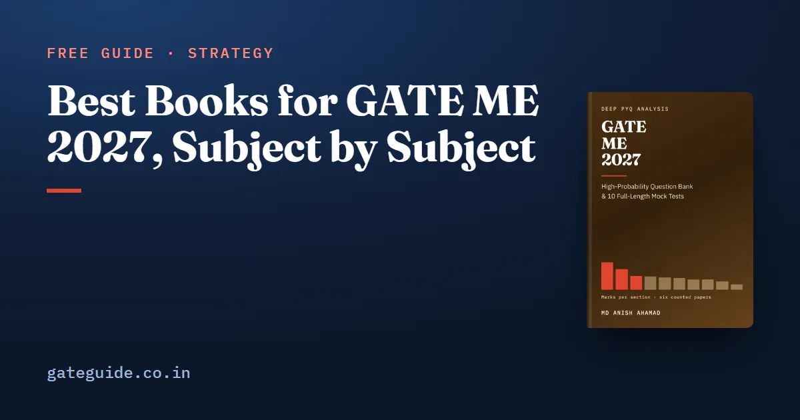

Best Books for GATE ME 2027, Subject by Subject

If you want one reference text per subject for GATE ME 2027, use the standard engineering textbooks: Kreyszig for mathematics, Beer and Johnston for mechanics, Gere for strength of materials, Rattan for theory of machines, Shigley for machine design, White for fluids, Incropera for heat transfer, Cengel and Boles or P. K. Nag for thermodynamics, and Kalpakjian and Schmid for manufacturing. Read them for concepts and method, then move to past papers. This guide gives the list, shows which chapters the 2027 syllabus no longer needs, and tells you how to split reading time by where the marks are.
In this guide
- Key takeaways
- Three terms before the list
- The list at a glance
- How to split reading time by where the marks are
- How to read a textbook for GATE
- Applied Mechanics and Design
- Fluid Mechanics and Thermal Sciences
- Materials, Manufacturing and Industrial Engineering
- Where textbooks stop, and where the GATE ME 2027 book fits
- Quick revision
Key takeaways
- One primary textbook per subject is enough. A second book is for a doubt, not for a second full read.
- Read only the chapters that match a line of the official 2027 ME syllabus. The syllabus is your chapter list.
- Lagrange's equation and Heisler's charts left the 2027 syllabus; skip those textbook pages.
- Materials, Manufacturing and Metrology is the heaviest technical subject, 17.4 marks a year on the mean, so it deserves the most reading time.
- Several 2027 additions, such as PID control, combustion basics, PLCs and six sigma, are thin or missing in older mechanical textbooks.
- Textbooks teach the method; past papers teach how GATE asks it. You need both, in that order.
Three terms before the list
A primary text is the one book you read for a subject, chapter by chapter, with a pencil. A reference text is a second book you open only when the first explanation does not click. The past-paper layer is the set of GATE questions on a topic, which shows you how the idea is examined.
The list below names standard textbooks used across Indian engineering courses. It gives author and title only. Editions and prices are left out because they change. Several of these books have gained co-authors in recent editions; any recent edition covers the GATE syllabus lines.
Before you buy anything, download the official ME syllabus from gate2027.iitm.ac.in. GATE Guide is an independent site with no connection to IIT Madras or the GATE office. The 2027 document added 30 phrases and removed 5 against 2026, mostly in manufacturing and industrial engineering. The GATE ME 2027 syllabus changes guide walks through each one.
The list at a glance
| Syllabus subject | Primary text | Second text for doubts |
|---|---|---|
| Engineering Mathematics | Erwin Kreyszig, Advanced Engineering Mathematics | B. S. Grewal, Higher Engineering Mathematics |
| Engineering Mechanics | Beer and Johnston, Vector Mechanics for Engineers | — |
| Mechanics of Materials | Gere and Goodno, Mechanics of Materials | — |
| Theory of Machines and Vibrations | S. S. Rattan, Theory of Machines | S. S. Rao, Mechanical Vibrations |
| Machine Design | V. B. Bhandari, Design of Machine Elements | Budynas and Nisbett, Shigley's Mechanical Engineering Design |
| Fluid Mechanics | Frank M. White, Fluid Mechanics | Modi and Seth, Hydraulics and Fluid Mechanics Including Hydraulic Machines |
| Heat Transfer | Bergman, Lavine, Incropera and DeWitt, Fundamentals of Heat and Mass Transfer | — |
| Thermodynamics and Applications | Cengel and Boles, Thermodynamics: An Engineering Approach | P. K. Nag, Engineering Thermodynamics |
| Materials, Manufacturing and Metrology | Kalpakjian and Schmid, Manufacturing Engineering and Technology | Ghosh and Mallik, Manufacturing Science; Callister, Materials Science and Engineering: An Introduction; R. K. Jain, Engineering Metrology |
| Industrial Engineering | H. A. Taha, Operations Research: An Introduction | — |
| General Aptitude | No textbook needed | Past GA sections, timed |
How to split reading time by where the marks are
Not every subject earns the same hours. The GATE ME 2027 book counted all six ME papers from 2022 to 2026, both sets of 2022, against the official keys. Its means are a year's average, with the two 2022 sets averaged first.
| Subject | Mean marks a year | Range |
|---|---|---|
| Materials, Manufacturing and Metrology | 17.4 | 14-21 |
| Engineering Mathematics | 13.0 | 13-13 |
| Thermodynamics and Applications | 8.8 | 7-11 |
| Mechanics of Materials | 8.4 | 6-15 |
| Fluid Mechanics | 7.8 | 6-10 |
| Heat Transfer | 7.4 | 5-9 |
| Industrial Engineering | 6.8 | 2-10 |
| Theory of Machines and Vibrations | 6.6 | 2-8 |
| Engineering Mechanics | 5.4 | 2-8 |
| Machine Design | 3.4 | 2-5 |
General Aptitude was exactly 15 marks in all six papers. The ten technical means add up to 85.0.
A worked example
Suppose you have 100 hours for the first textbook pass over the technical subjects. Share them in proportion to the mean marks:
Manufacturing gets hours. Engineering Mathematics gets about 15.3. Machine Design gets about 4.0.
Trap: Machine Design looks like the subject to read last, but the count understates it. Eleven more questions, worth 16 marks, were counted in other sections with Machine Design as the runner-up, mostly stress and failure questions. Read failure theories and fatigue properly, whatever the hours formula says.
The GATE ME subject-wise weightage guide explains each mean and its range in full.
How to read a textbook for GATE
- Map before you read. Print the syllabus and tick only the chapters that match a line.
- Read for procedures. Write each method as numbered steps: a Mohr's circle, a velocity diagram, an effectiveness-NTU calculation, a Taylor tool-life problem.
- Fix conventions early. Choose one sign convention for work and heat, and one for shear force and bending moment. Mixing two books mid-topic is how a correct method gives a wrong sign.
- Switch to past papers after the first pass. Don't finish a whole textbook before you touch a GATE question.
- Revise from your notes, not the book. Your own one-page summaries and the GATE ME formula sheet are faster to revise than any chapter.
Remember: the syllabus is the chapter list. A textbook chapter earns your time only if it maps to a line in the 2027 document.
Applied Mechanics and Design
Beer and Johnston covers free-body diagrams, friction, trusses and rigid-body dynamics. Plane trusses and frames was the one Engineering Mechanics group examined in all six papers. Skip any chapter on Lagrange's equation: the 2027 syllabus no longer names it.
Gere and Goodno is the primary text for Mechanics of Materials. Shear force and bending moment diagrams drew two marks in each of the last four papers, and stress transformation with Mohr's circle appeared in five of six.
Rattan covers mechanisms, cams, gears, flywheels, governors and balancing. S. S. Rao is the vibrations text; free vibration and damping was the only group in that subject examined in all six papers. The 2027 wording adds a control line, with a PID controller and a transfer function, which mechanical textbooks rarely cover. Read a short control-systems chapter for it. It has no counted question.
For Machine Design, Bhandari is the common Indian text, and Shigley is the deeper reference for fatigue and the Soderberg, Goodman and Gerber lines.
Fluid Mechanics and Thermal Sciences
White covers control-volume analysis, Bernoulli, dimensional analysis, pipe flow and compressible flow. Modi and Seth is useful for hydraulic turbines and pumps, now that "pumps and pump characteristics" is named under turbomachinery.
Incropera is the heat transfer text. Its transient conduction chapter still matters for the lumped parameter system, but skip the Heisler chart pages: the 2027 syllabus dropped them. Boiling and condensation is newly named, so read that chapter too.
For Thermodynamics, Cengel and Boles and P. K. Nag both cover the laws, property tables, availability, and the power and refrigeration cycles. Pick one. The Otto cycle is the only air-standard engine cycle the six papers have set, but Diesel and dual cycles are named, so read all three.
In one line: keep each thermal textbook, but cross out the pages the 2027 syllabus removed and add the few chapters it newly names.
Materials, Manufacturing and Industrial Engineering
This is the largest block of marks and the one whose syllabus changed most. Kalpakjian and Schmid gives the breadth: casting, forming, joining, machining, additive manufacturing and CNC. Ghosh and Mallik goes deeper into the mechanics of machining, which has been a two-mark question every time it was set. Callister covers crystal structure, phase diagrams and heat treatment. R. K. Jain covers limits, fits, comparators and interferometry.
The forming line no longer lists its processes by name, but extrusion, wire drawing, rolling and deep drawing all sit under "bulk forming and sheet forming", so keep those chapters.
Taha covers linear programming, transportation, assignment, queuing and PERT/CPM. Newly named items such as six sigma, lean manufacturing, PLCs and actuators are thin or absent in older editions. A short, honest reading from any current text is enough. No past paper can prepare you for them yet.
Where textbooks stop, and where the GATE ME 2027 book fits
A textbook explains Taylor's tool-life equation once. It will not show you the forms GATE has used it in, or which neighbouring idea it was paired with. That layer comes from past papers, studied topic by topic.
The GATE ME 2027 book is built for that layer. It counts all six ME papers from 2022 to 2026, with 942 questions written for it and 10 full mock tests, plus a ranked top 100, a what-not-to-skip chapter, a staged revision plan and a last-minute sheet. It does not replace the textbooks above. It tells you which topics inside them GATE keeps returning to, and which newly named ones have no past paper behind them. General Aptitude needs practice rather than a book; the GATE General Aptitude guide covers the method.
Quick revision
- One primary textbook per subject; a second only for doubts.
- Map every chapter to a line of the 2027 ME syllabus before reading it.
- Skip Lagrange's equation and Heisler's charts; both left the syllabus.
- Give Materials, Manufacturing and Metrology the most hours: 17.4 marks a year on the mean.
- Machine Design is undercounted; read failure theories and fatigue properly.
- Add short readings for newly named topics: PID control, boiling and condensation, combustion, PLCs, six sigma.
- Switch to topic-wise past papers right after each first pass.
- Revise from your own notes and a formula sheet, not from the textbook.
Frequently asked questions
Which is the best book for GATE Mechanical Engineering preparation?
No single book covers the whole ME paper well. Use one standard textbook per subject, such as Gere for Mechanics of Materials, White for Fluid Mechanics, Incropera for Heat Transfer and Cengel and Boles or P. K. Nag for Thermodynamics, and read only the chapters the official syllabus names. Then move to past papers topic by topic, because they show how GATE asks each idea.
Which book should I use for manufacturing in GATE ME?
Kalpakjian and Schmid, Manufacturing Engineering and Technology, for breadth, and Ghosh and Mallik, Manufacturing Science, for the mechanics of machining and forming. This is the heaviest technical subject in the paper: 17.4 marks a year on the mean across the six counted papers from 2022 to 2026, and the largest in every one of them. It also changed most in the 2027 syllabus.
Do I still need to study Heisler's charts and Lagrange's equation for GATE ME 2027?
No. Both phrases left the 2027 ME syllabus, and the 2027 document uses neither word anywhere. Older textbooks and coaching notes still teach them, so treat those pages as material to recognise, not to study. Unsteady conduction and the lumped parameter system remain on the syllabus, so the rest of that heat transfer chapter still matters.
Are textbooks enough for GATE ME or do I need previous year papers?
You need both, in that order. A textbook builds the concept and the exact method, such as a Mohr's circle construction or an effectiveness-NTU calculation. Past papers show which forms GATE repeats and train you for numerical-answer questions with no options. Reading without past papers leaves you slow; past papers without the method turn into memorising answers.
Should I read two textbooks for each GATE ME subject?
No. Read one primary textbook per subject, limited to the syllabus chapters, and keep a second book only for the topic where the first explanation did not make sense. Two full reads of two books costs weeks that are better spent on past papers, a formula sheet and timed mock tests in the last two months.
Sources
- GATE 2027 official website (IIT Madras)
- GATE 2027 ME syllabus (official PDF)
- Kreyszig, Advanced Engineering Mathematics (Wiley)
- Grewal, Higher Engineering Mathematics (Khanna Publishers)
- Beer and Johnston, Vector Mechanics for Engineers (McGraw Hill)
- Goodno and Gere, Mechanics of Materials (Cengage)
- Rattan, Theory of Machines (McGraw Hill India)
- Rao, Mechanical Vibrations (Pearson)
- Bhandari, Design of Machine Elements (McGraw Hill India)
- Budynas and Nisbett, Shigley's Mechanical Engineering Design (McGraw Hill)
- White, Fluid Mechanics (McGraw Hill)
- Modi and Seth, Hydraulics and Fluid Mechanics Including Hydraulic Machines (library record)
- Bergman, Lavine, Incropera and DeWitt, Fundamentals of Heat and Mass Transfer (Wiley)
- Cengel and Boles, Thermodynamics, An Engineering Approach (McGraw Hill)
- Nag, Engineering Thermodynamics (McGraw Hill India)
- Kalpakjian and Schmid, Manufacturing Engineering and Technology (Pearson)
- Ghosh and Mallik, Manufacturing Science (IISc library record)
- Callister and Rethwisch, Materials Science and Engineering, An Introduction (Wiley)
- Jain, Engineering Metrology (Khanna Publishers)
- Taha, Operations Research, An Introduction (Pearson)
Dates, fees and the syllabus are set by the GATE 2027 organising institute and can change. Always confirm at gate2027.iitm.ac.in.